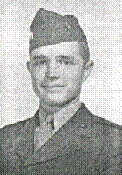

Capt Fred C Eberhardt: Long time Company Commander of C Company. Commanded the Company through Roi-Namur, Saipan and Tinian. After the company returned to Maui from Tinian he was transferred to Battalion Headquarters and Capt Champ McDaniel took Command of C Company. Fred, along with the Battalion Commander and several other Battalion staff officers were killed in action at Iwo Jima February 20, 1945(the first night on Iwo Jima).
The following was excerpted from a copy of the hometown memorial service conducted for him after his death on Iwo Jima.
Fred Curry Eberhardt, saw action in many of the battles of the Pacific theatre of war which cleared the way for final victory. He was killed in action February 20, 1945, at Iwo Jima, where he was serving as operations officer for the First Battalion of the Twenty-third Marines in the Fourth Marine Division.
Born in Salina April 21, 1921, Fred was second son of Mr.. and Mrs.. Frank L. Eberhardt, 735 South Santa Fe, Salina, Kansas.
After Fred's graduation in 1938 from Salina High School where he left a memorable record of achievement in scholastic and athletic activities, he attended the University of Kansas as a Summerfield Scholar. During his University years Fred continued his interest in both athletics and scholarship. In recognition of his achievements, he was elected to membership in Phi Beta Kappa, national honor fraternity. During his senior year, he served as president of his social fraternity, Beta Theta Pi.
Near the close of his sophomore year, Fred enlisted in the United States Marine Corps. He attended training classes at San Diego Naval Base during the following two summers. The month before his graduation in June, 1942, he received his call to report for active service. He completed his university requirements and reported in the East for training, being awarded his Bachelor of Arts degree and receiving his commission in the Marine Corps at about the same time.
After periods of service in Philadelphia, Camp LeJeune and Camp Pendleton, Fred received his overseas orders and soon after saw active duty at Roi-Namur, Saipan, Tinian and Iwo Jima. For his leadership in the attack at Saipan, he was awarded the Bronze Star. The citation reads as follows:
"For heroic achievement in action against the enemy while serving as the commanding officer of an assault rifle company on SAIPAN, MARIANAS ISLANDS. On 15 June 1944, when his company was held up by extremely heavy machine gun and mortar fire from well entrenched and dug in enemy forces, CAPTAIN EBERHARDT, on two occasions, with complete disregard for his own safety, personally led his men forward. His cool leadership and calm courage were an inspiration to his associates and caused his company to push the attack aggressively over extremely rugged and mountainous terrain and seize its objective. His courageous conduct and outstanding devotion to duty were in keeping with the highest traditions of the United States Naval Service."
A Memorial Service for Fred was held at the family home in Salina a few days after word had been received of his death. It was conducted by Dr. Robert A. Hunt of The First Methodist Church of which Fred was a member. His brother Chris, then an Ensign in the Navy came from his station in San Diego to attend this service. His sister Margaret, a student at Lindenwood College, also attended. Charles, a Marine Lieutenant, wounded at Iwo Jima was in a Pacific area hospital.
As part of that service the following tribute was presented by Dr.R. V. Kearns, pastor of the First Presbyterian Church of Salina who knew Fred throughout his high school, university, and Marine Corps days:
"I count it a privilege to offer a word in tribute because I knew Fred and admired him more than you will ever know. He came into my acquaintance in his high school days as I watched him play football. He always played hard and clean, for he was ever a true sportsman in the American sense of that designation.
"To me, Fred Eberhardt was one of those rare persons who offered the added measure of achievement to every worthy human striving. He was character plus, courage plus, personality plus, and ability plus. He had so much to give of leadership to the world's Tomorrow that it seems tragic that all had to be given to its brief and bitter Today. Mine is a deep sorrow at his going, but the loss of such a life is more than personal or community wide. It is a loss to his generation, which will desperately need men like him to lead it out of chaos to better things."
While he was constantly acquiring new friends, Fred Eberhardt maintained a deep loyalty to that group who shared both his educational and social activities, from kindergarten and through college.
In the saddened days and weeks that followed the news of Fred's death in that tragic war drama of February 1945, these friends of childhood, school, college, and war service, wrote and spoke to his family their tributes and testimonials to him as a beloved friend.
Out of the solace and inspiration of those messages came first the idea, then the plan, on the part of his parents to prepare for his friends this simple memorial. In presenting it to those who knew and loved him, his parents, his brothers and sister trust that it may help to keep green in their memories those qualities and characteristics, those personal traits of Fred that won for him the wide circle of friends who feel a personal loss in his death.
The following is a chronolgy of Fred Eberhardt's service with Company C.
July 1942 Joined C Company 22nd , 22-31, Reserve Platoon Leader,
2nd Lieutenant.
Aug 1942 1-12, PL LDR 13-16 C.O. 17-31 Reserve Platoon Leader 2nd Lieutenant.
Sept 1942 1st Detached to Co. "B"-1-23, 5-30 C.O.
Oct 1942 1-3, Fur. 5, Detached to "C" Co. 17, Rec'd and accepted commission as
regular 17-31, Commanding Officer.
Nov 1942 1-3 and 5-30 Commanding Officer.
Dec 1942 Company Commander
Jan 1943 1-31, C.O. 20th Received and accepted commission as 1st Lieutenant. To rank
from 31- Dec-42, auth A1Nav No 4 1943 ( Co. C 9-27 aboard USS Calvert fr Norfolk
to Chesapeake Bay for landing maneuvers)
Feb 1943
March 1943 1-9, C.O. 11-17 fur 18-31 Executive Officer
Apr 1943 1-16, Exec Officer 17-30 temp detached duty at Individual combat school,
MB, Courthouse Bay, Post.
May 1943 1-2, C.O., 3-31 Executive Officer
July 1943 Executive Officer. Entire company embarked aboard train at
Camp LeJeune, New River, N.C., 6-Jul-43; 6-11, enroute; 12, arrived and disembarked
at Camp Joseph H. Pendelton, Oceanside, California
Aug 1943 1-8, Executive Officer 9-31, C.O.
Sept 1943 Commanding Officer
Oct 1943
Nov 1943
Dec 1943 (C.O.) 14th emb aboard LST #270; 15, sailed fr San Diego, California;
15-16, participated in divisional maneuvers; 17, arr and disemb in the vicinity
of Oceanside, California. 30, emb aboard APA-102 (Lasalle), 31 sailed from
San Diego California.
Jan 1944 (C.O.), 1, enroute; 2, participated in landing exercises aboard USS
Lasalle at San Clemente Island, Calif; 11th, embarked aboard USS Lasalle at
San Diego, Calif; 13, sailed there from; 13-31 enroute.
Feb 1944 (C.O.) 1, arrived and disembarked from USS Lasalle. Participated in the
battle of Roi Namur Island, Kwajalein Atoll, Marshall Islands. 5,
re-embarked. 8, there from. 8-16, enroute. 17 arr. And disemb at Maui, T. H.
Created by Rowland Lewis
Last Modified 10/16/99